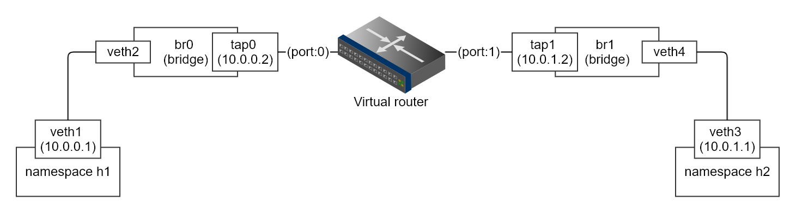
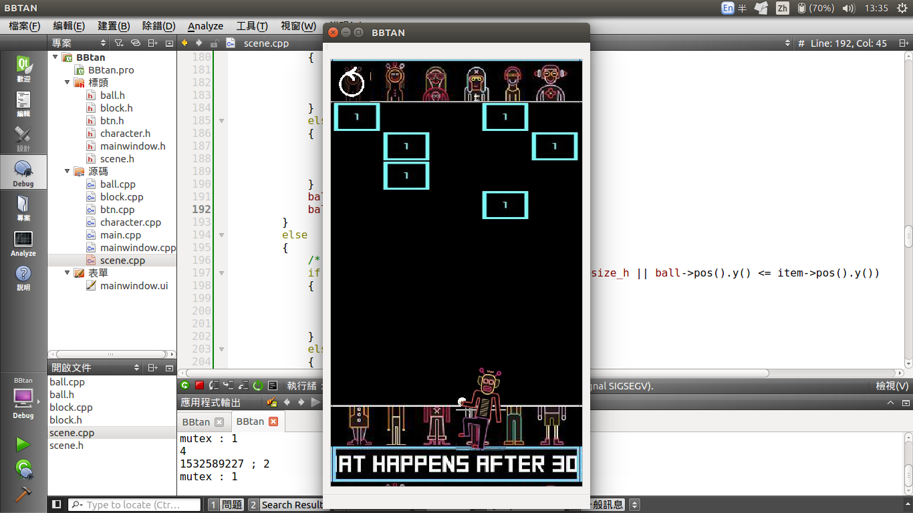
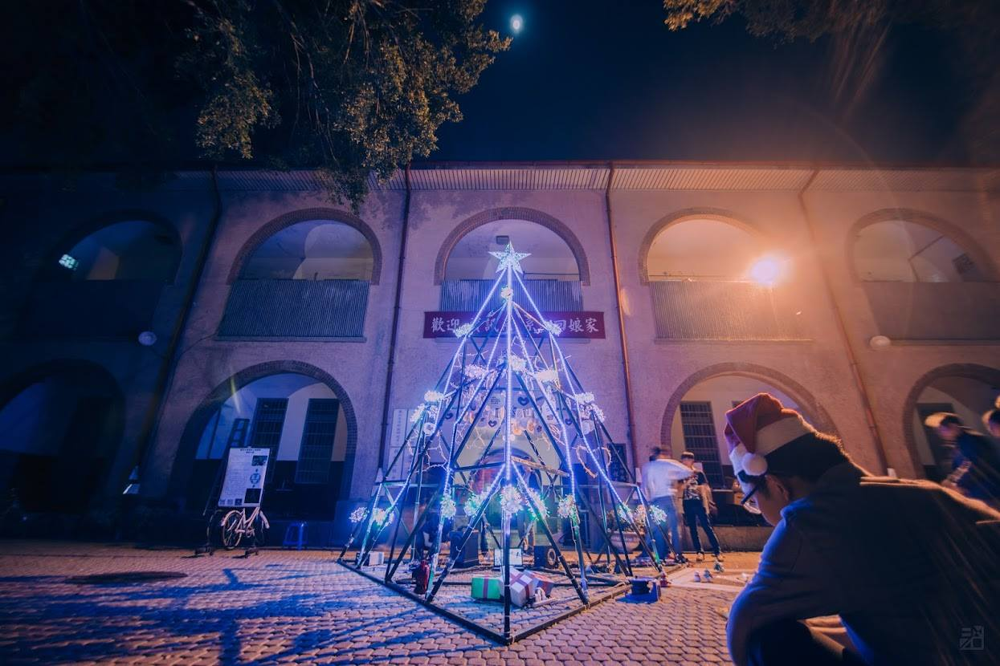

Hey there!
Welcome to my personal website, this website is made by papoGen, which is one of my side project!
I'm a network researcher, studied SDN/P4 & network security in my master degree. Also I'm a Node.js player, Qt application/game maker, founder of toolbuddy.
Contact me
Side Projects
- Network-related Projects
- Qt / C++
- Node.js
- Embedded System / MCU
- Virtualization
- Mathematics
P4 learning and experiment materials. Also make some tutorials/training courses and test
environment (via Docker) of P4.
Provide some implementation of P4 in open source environment (BMv2):
- Basic forwarding
- Dynamic forwarding
- ECMP/WCMP
- L2 learning switch
- Digest (Feature of P4)
- MPLS (simplify version)
- NAT
- Monitor (leverage counter)
- Local routing (leverage register)
- Boardcast/Multicast

Using tuntap to simulate router port, and implement software router and related network functions with C, and also provide documents on HackMD, support:
- Basic forwarding
- L3
- L4
- Simple CLI implementation
- show command (e.g. show router's statistics)
- debug command (e.g. show the information of forwarding packets)
★ Node.js
Base on LaTeX and Node.js to build fancy paper work.
Use Sass/CSS + Pug + Node.js to generate beautiful static website.
Base on Node.js and Pixi.js to build the render engine for Game platform.
★ Qt / C++

Using Qt to build a self-used translator, a good tool with reading paper.
Clone of Angrybird, TA demo for final project of 2016 course, which is developed by Qt.

Qt tutorials of making an android game - BBTAN, aim to teach the students to have knowledge to develop their game with Qt.
Live demo
★ Embedded System / MCU

Using MSP430 and some electronic materials to construct an electricity Christmas tree! And we design the entire system, which has a programmable lighting pattern! Cheer!
★ Virtualization
Developing a standalone virtual machine which following Webassembly spec, to leverage its memory design,
and other advantages. Also we have design some extensible feature for making it a virtual machine.
★ Mathematics
Record the learning materials of the course - "STOCHASTIC ANALYSIS OF COMPUTER NETWORKS" in National Cheng Kung University.